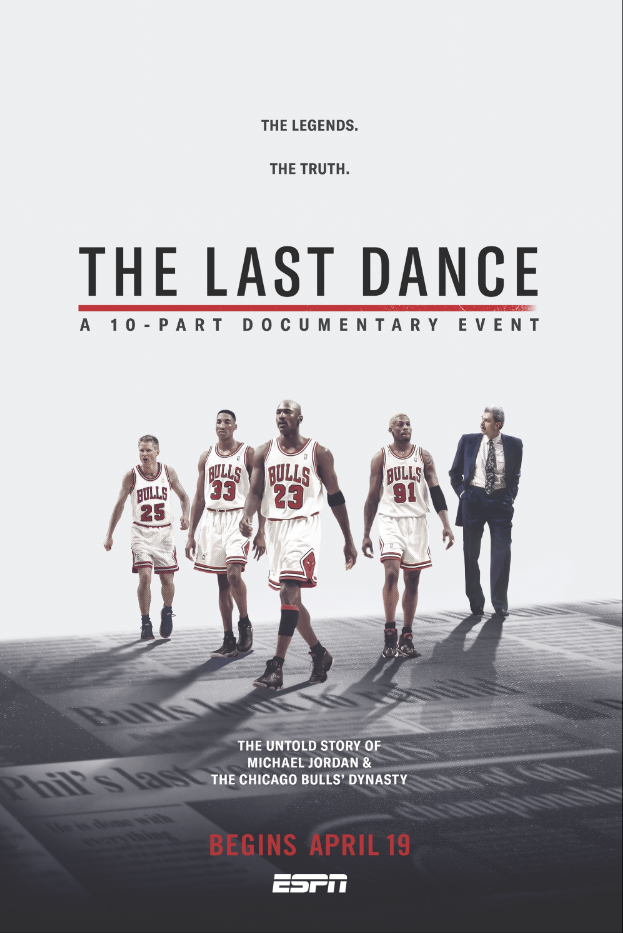

Documentaries bring viewers into new worlds and experiences through the presentation of factual information about real people, places, and events, generally -- but not always -- portrayed through the use of actual images and artifacts. But factuality alone does not define documentary films; it's what the filmmaker does with those factual elements, weaving them into an overall narrative that strives to be as compelling as it is truthful and is often greater than the sum of its parts.
| Movie | Description | Year | Ratings |
|---|---|---|---|
|

|
In the fall of 1997, Michael Jordan and the Chicago Bulls allowed a film crew to follow them as they went for their sixth NBA title in eight seasons. That resulted in a stunning portrait of one of the sport's most iconic athletes and a celebrated team. "The Last Dance" follows the Bulls' 1997-98 season from start to finish, while also covering the rest of the chapters in Jordan's remarkable career. The 10-part docuseries follows the Jordan timeline from when he was an emerging star on his high school team to becoming a worldwide marketing force and cultural figure. The series takes its name from a phrase coined by then-Bulls coach Phil Jackson, who knew that the season would likely be the final run for the core members of that 1990s Bulls dynasty. |
2020 |
9.4 |
|
|
Investors seeking new alternatives for high returns find a gold mine in China -- until the discovery of a massive web of fraud calls everything else into question |
2017 |
8.1 |